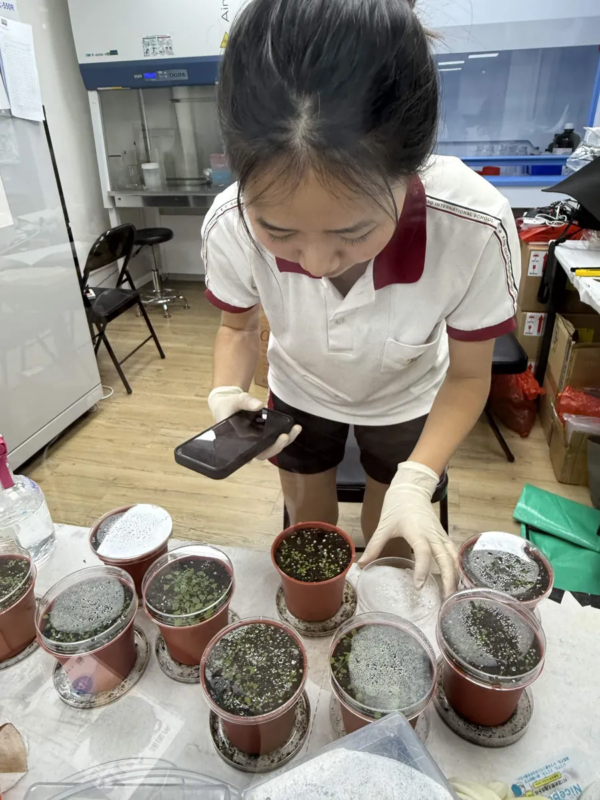

Everything on this page is the record as it was written, not a summary of it. The team keeps one electronic lab notebook per month, in a fixed shape: date, title, purpose, procedure, results, and the names of whoever did the work and whoever wrote it up. The plant sub-team keeps a second notebook of its own, because plant runs are measured in weeks and a day-by-day file loses them.
The year, pipeline by pipeline
Nine tracks ran in parallel, most of them for months at a time, and no single notebook shows that. This calendar does. It says which pipeline was running in which month and where the weight of the work sat, so the notebooks below can be read against it.
Main period Lighter activity Planned, not yet run Wet lab Dry lab Engagement
The chart scrolls sideways.
Wet lab notebook, month by month
Open a month and the notebook opens with it, inside the page. Each file is the team's own export, and every entry in it keeps the shape the team agreed in April: date, title, purpose, procedure, results, done by and recorded by. Nothing has been tidied. Failed runs, repeated gels and the days that only say what medium was poured are all still there, because that is most of what a notebook is.
April 2026 22 to 30 April 21 pages · 12 entries The first fortnight at the bench: the pNW33N shuttle vector recovered from the BCRC vial, minipreps and a verification digest, a Gibson assembly, Bacillus subtilis 168 back out of the collection, and the first hydroponic holder poured on 27 April.


May 2026 1 to 31 May 70 pages · 42 entries Electroporation month. Competent B. subtilis made, remade and made again, transformations swept from 2.0 to 2.2 kV, and the plant work opening alongside it: salinity plates, ½ MS medium, hydroponic medium, and the first Arabidopsis sown on agar on 26 May.


June 2026 1 to 30 June 138 pages · 104 entries The circuit starts going together: Golden Gate assemblies, colony PCRs and a gel on almost every page, with the first bioreactor growth runs on 6, 7 and 14 June and the first hydroponic boxes filled beside them.


July 2026 1 to 31 July 205 pages · 161 entries The busiest cloning month: Level 1 transcription units screened and sequenced one after another, the CH Biotech peptide arriving on 9 July, experiment sets 5 to 7 sown and transferred, and the hydroponic boxes changed over twice.


August 2026 1 to 29 August 222 pages · 232 entries Protein month, on top of everything else. Extraction, Ni-NTA purification, dialysis, SDS-PAGE, Coomassie staining and three Western blots, run alongside the Level 2 assemblies, the heat stress trial and the first ACC deaminase plant tests.


September and October 2026 1 September onwards Open Both months are open in the team's notebook and have not been exported yet. Work in this period is in the wiki already: the Level 2 junction checks of 1 and 19 September on Parts, the BoPep4 Level 0 screen of 18 September, and the plant runs that closed on 5 September on Plants.
Slot: September and October notebooksTwo more PDFs belong here once the months close. Drop them into notebook/pdf/ as wetlab-notebook-2026-09-september.pdf and wetlab-notebook-2026-10-october.pdf, and copy one of the toggles above.
Plant notebook
The plant work keeps its own notebook, and it has to. A cloning entry is finished the day it is written; a plant entry is one day of a run that takes three weeks, and the entries that matter are the sowing, the transfer, the treatment and the harvest, spread across the calendar. Keeping it separately is what makes an experimental set readable end to end. The results those runs produced are on Plants; what is here is the bench record behind them.

Slot: plant notebook PDFPlant notebook PDFs will be added here. The plant sub-team's notebook is kept as a working document and has not been exported yet. When it is, it goes into notebook/pdf/ as plant-notebook.pdf and gets a viewer and the two links, exactly like the months above.
Until then, these are the dated entries the plant notebook holds, taken from the working document on 27 August. Titles are the team's own.
July 2026 2 to 30 July 23 entries Sets 5, 6 and 7 built and planted, the hydroponic boxes brought into the protectant work, and the first soil pots.
- 2 July. Chlorophyll Extraction (Phoebe, Abby T; recorded by Sophie H)
- 4 July. Making salinity agar plates (Abby K, Abby T, Audrey H)
- 7 July. Four entries on the same day, across the salinity sets (Sarah, Sophie H, Sophie C, Alex, Naomi, Abby K, Abby T)
- 12 July. Fresh weight of Arabidopsis (Sophie H, Sophia Yeh, Naomi)
- 13 July. Chlorophyll Extraction (Abby T, Sophie C, Audrey H, Abby K)
- 19 July. Plant seeds for Exp set 6 and exp set 7 vernalization (Abby T, Audrey H)
- 19 July. Plant seeds for set A and vernalization in hydroponic system (Alex)
- 20 July. Transfer plants from tube rack to Box 1, 2, 3 (Alex, Ryan)
- 22 July. Issue of Box BI (plant model team)
- 25 July. Planting Arabidopsis in soil (Alex)
- 25 July. ½ MS medium preparation (2000 mL) (Sara, Sophie H)
- 25 July. CH biotech protectant testing on box 1, 2, 3, 4 (Alex)
- 25 July. Prepare 3M NaCl with ½ MS medium (Alex)
- 27 July. Plant seeds in circular ½ MS medium (neutral) plates (Abigail, Sophia Y)
- 27 July. Make experiment set 6 salinity plates (Abby, Abigail)
- 28 July. Transfer plants from incubator to salinity plates (Sara, Sophie H, Abby T)
- 28 July. Change medium for hydroponic box 1, 2, 3, 4 (Abby T, Audrey H)
- 30 July. Plant seeds for set C and vernalize in hydroponic system (Alex)
- 30 July. Prepare 50 mL 0.8% ½ MS agar, and two batches of 1500 mL ½ MS medium (Alex)
August 2026 4 to 19 August 8 entries Set 6 harvested and read out, set 7 treated on the horizontal plates, and the hay infusion measurements begun.
- 4 August. Add 正瀗 protectant to exp 7 circular plates, pretreatment group (Sophia Y)
- 4 August. Agar exp set 6 fresh weight (Audrey H)
- 5 August. Agar (exp set #6) chlorophyll extraction (Audrey H, Phoebe, Sarah C)
- 5 August. Seed planting on agar (Audrey H, Naomi, Sophie H)
- 5 August. Add CH protectant and NaCl on horizontal agar plates (exp set #7) (Audrey H)
- 9 August. Measure Arabidopsis fresh weight (Sophia L, Abigail)
- 9 August. Measure OD of hay infusion (Sophia L, Abigail)
- 19 August. Prepare 420 mL 0.8% ½ MS agar (Abigail, Abby K)
The plant notebook also carries the protocols the entries refer to, including the full salinity plate recipe, the chlorophyll extraction and the experiment set forecasting sheets. Those are written up on Experiments, and the run by run results on Plants.
How to read these files
Four things are worth knowing before opening one.
- Every entry names two people. Done by, and recorded by. They are often different, because whoever ran the bench did not always write it up, and the team wanted both on the record.
- The dates are written as 20260722. Year, month, day, with no separators, which is the convention the April reference page set and the rest of the year followed.
- A result is sometimes an empty heading. An entry with Results and nothing under it is a run whose output never made it back into the file. There are several, mostly in the busiest weeks of July and August.
- Gel photographs carry their own captions. Most were labelled in the slide decks the team keeps per month and pasted in, so the heading inside a photograph is the team's own and can differ from the date of the page it sits on.